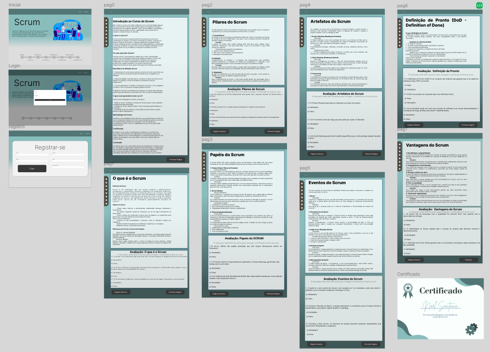
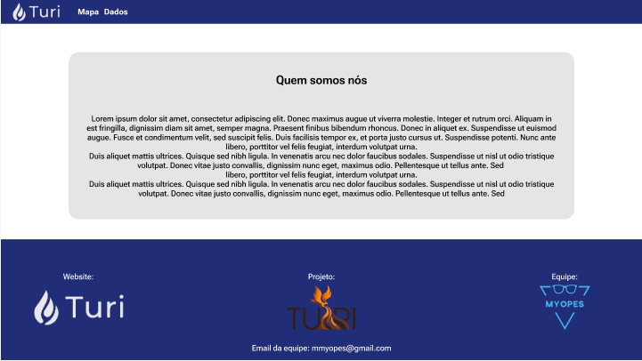

Projetos

1º DSM
CapyDev
Plataforma interativa para aprendizado da metodologia Scrum, com cadastro, login, questões verdadeiro/falso e emissão de certificado de aprovação.
SAIBA MAIS
2º DSM
Turi
Aplicação web para visualização de dados ambientais sobre focos de calor, risco de fogo e áreas queimadas por estado e bioma, com mapas interativos e gráficos.
SAIBA MAIS
3º DSM
Datlas
Plataforma interativa para consulta e comparação de dados de satélites gratuitos (Landsat, Sentinel) via mapa, com filtros e exportação de séries temporais (NDVI).
SAIBA MAIS